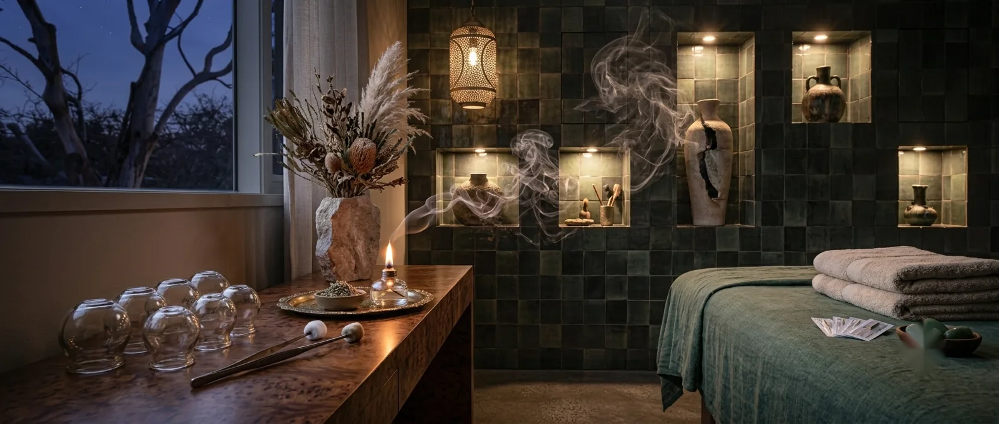
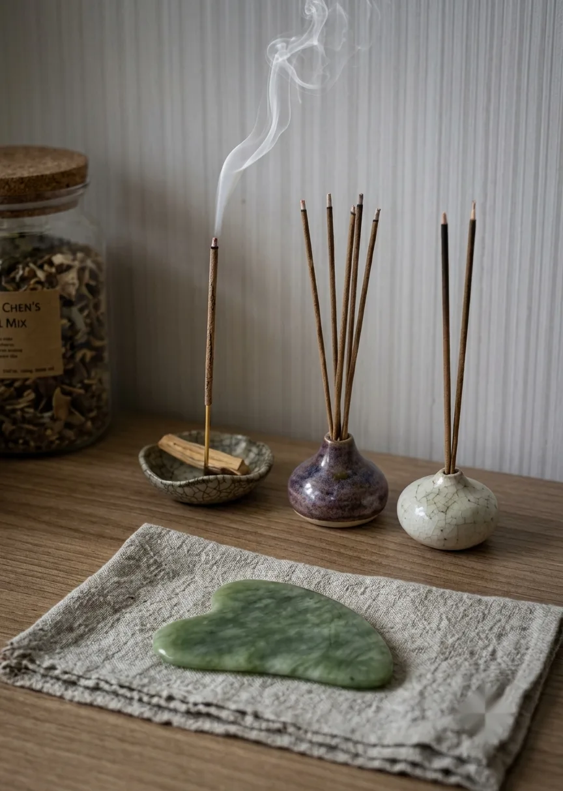
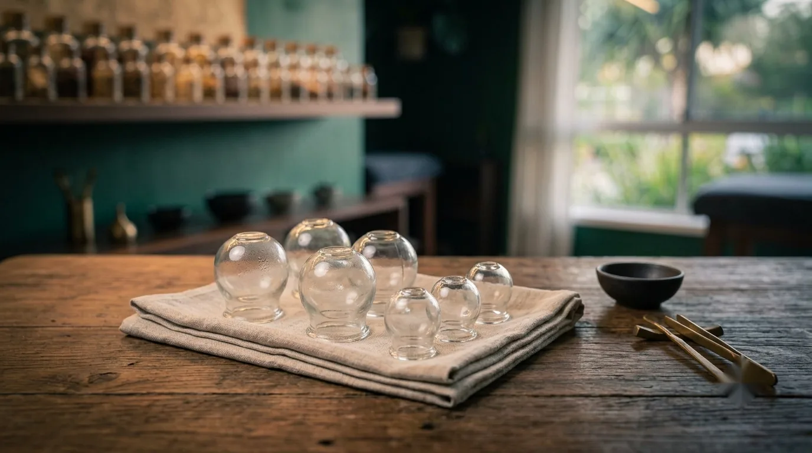

Traditional technique
Fire Cupping Therapy
A traditional technique added within your session to ease tension and improve circulation.

- Duration
- Within your appointment
- Best for
- As part of treatment
- Hours
- Tue 12–5pm
- Where
- Mermaid Beach
The technique
Ānshén Acupuncture offers this traditional technique in Mermaid Beach: heat and glass cups used as part of a broader treatment approach.
Fire cupping therapy is a traditional Chinese medicine technique that uses heat to create a gentle vacuum effect with glass cups placed on the skin. It is commonly used to support circulation and ease muscle tension as part of a broader treatment approach.
Cupping is offered within your acupuncture appointment where it suits your treatment plan, and is always discussed with you beforehand.
What to expect
- Warmth is briefly introduced to a glass cup before it is placed on the skin
- The cup creates a gentle vacuum and a drawing sensation
- Cups may be left in place or moved slowly across the area
- Circular marks are common afterwards and typically fade over several days
Treatments are provided by an AHPRA-registered practitioner.


Good to know
Common questions.
Does fire cupping hurt?
Most people describe a drawing or tugging sensation rather than pain. Tell your practitioner if the pressure feels like too much and it can be adjusted or removed.
Will it leave marks?
Circular marks are common after cupping and usually fade over several days. If you have an event coming up, mention it and we can factor that in.
Is the flame near my skin?
No. Heat is introduced inside the glass cup to create the vacuum, and the cup is then placed on the skin. The flame does not touch you.
Can I book cupping on its own?
Cupping is offered as part of a broader treatment approach within an acupuncture appointment. Get in touch if you'd like to talk through what would suit you.
Who should mention health conditions first?
Everyone: please tell us about any skin conditions, bleeding disorders, medications, or if you're pregnant, so we can decide together whether cupping is appropriate.
Designed to help you feel at ease
Ready when you are.
It's normal to be curious or a little unsure about cupping if you haven't tried it before. We'll explain exactly what to expect, including the temporary marks it can leave, before we begin.